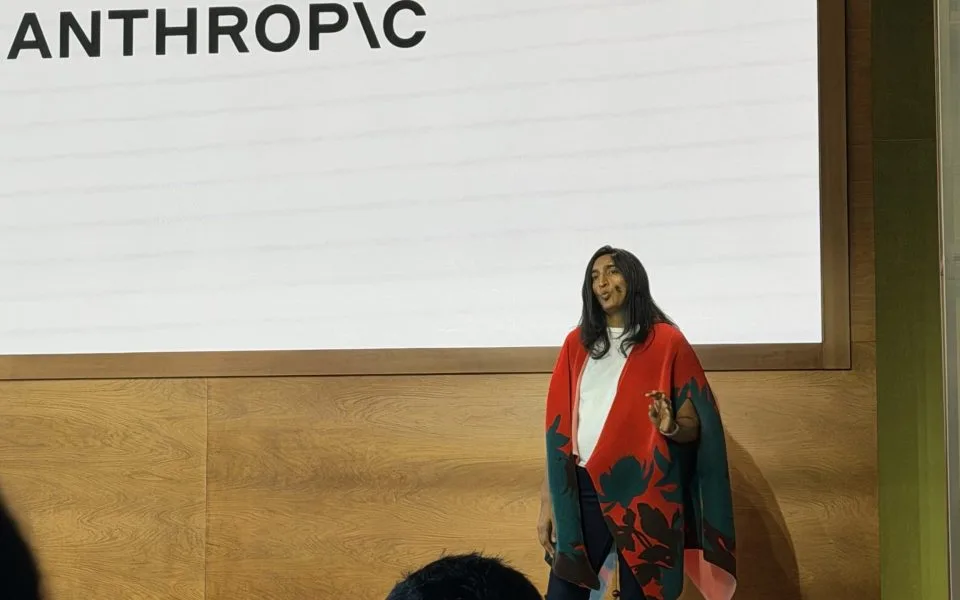

ARTICLE 01
앤트로픽, IPO 앞두고 AI 사무 생산성 도구 묶음 출시
코딩 너머 사무직으로 향하는 클로드.

SUMMARY
- 앤트로픽이 화요일 기업 사무용 생산성 도구 모음을 새로 내놨어요. 클로드 코드가 개발 분야를 바꿨듯 일반 사무 업무에서도 같은 변화를 노린다는 설명이에요.
- 최고제품책임자 아미 보라는 개발자는 작업 전체를 AI에 맡기지만 다른 팀의 일은 크게 달라지지 않았다고 말했어요. 클로드를 개인 최적화 도구가 아니라 팀의 능동적 구성원으로 만들겠다는 구상이에요.
- IPO는 이르면 다음 주로 예정돼 있고 기업가치는 약 1.4조 달러로 거론돼요. 마이크로소프트 같은 소프트웨어 업체와 경쟁이 가까워질 수 있다는 평가가 나왔고, 발표 후 마이크로소프트 주가는 2% 넘게 하락했어요.
LINK